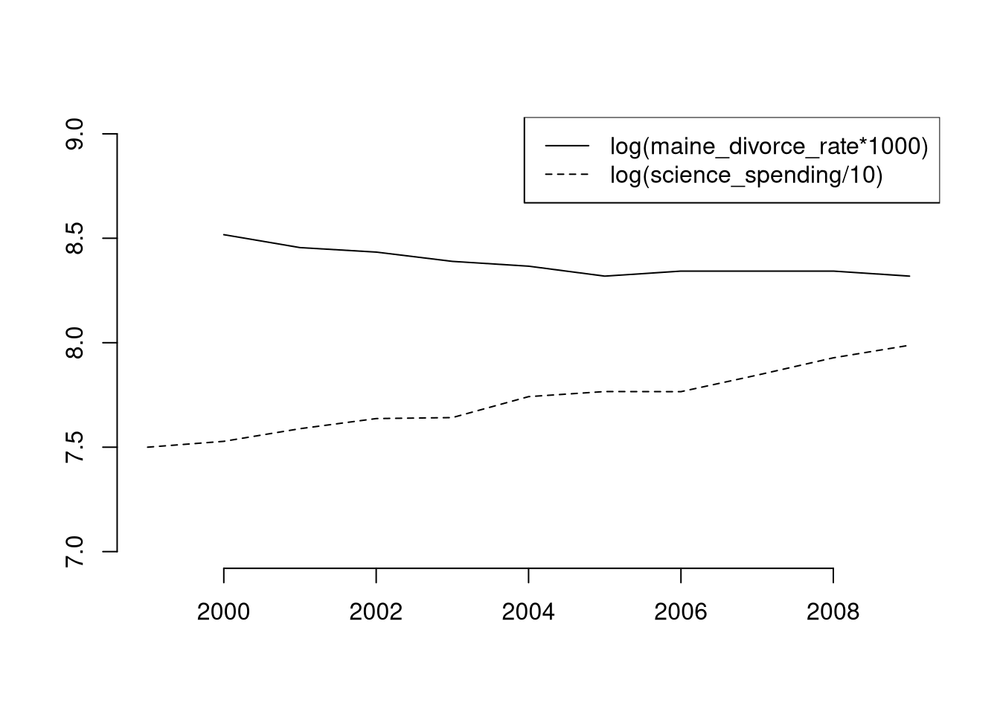

17 Misc. Topics
17.2 Nonparametric Tests
Distributional Comparisons. We can also examine whether there are any differences between the entire distributions
# Compute Quantiles
quants <- seq(0,1,length.out=101)
Q1 <- quantile(x1, probs=quants)
Q2 <- quantile(x2, probs=quants)
# Compare Distributions via Quantiles
rx <- range(c(x1, x2))
par(mfrow=c(1,2))
plot(rx, c(0,1), type='n', font.main=1,
main='Distributional Comparison',
xlab=expression(Q[s]),
ylab=expression(F[s]))
lines(Q1, quants, col=2)
lines(Q2, quants, col=4)
legend('topleft', col=c(2,4), lty=1,
legend=c('F1', 'F2'))
# Compare Quantiles
plot(Q1, Q2, xlim=rx, ylim=rx,
main='Quantile-Quantile Plot', font.main=1,
pch=16, col=grey(0,.25))
abline(a=0,b=1,lty=2)
We can also test for a differences in entire distributions, using all sample data \(x \in \{X_1\} \cup \{X_2\}\).
# Sorted Sample Data
x1 <- sort(x1)
x2 <- sort(x2)
x <- sort(c(x1, x2))
# Distributions
F1 <- ecdf(x1)(x)
F2 <- ecdf(x2)(x)
library(twosamples)The starting point is the Kolmogorov-Smirnov Statistic: the maximum absolute difference between two CDF’s. \[\begin{eqnarray} KS &=& \max_{x} |F_{1}(x)- F_{2}(x)|^{p}. \end{eqnarray}\]
# Kolmogorov-Smirnov
KSq <- which.max(abs(F2 - F1))
KSqv <- round(twosamples::ks_stat(x1, x2),2)
plot(range(x), c(0,1), type="n", xlab='x', ylab='ECDF')
title(paste0('KS = ', KSqv), font.main=1)
segments(x[KSq], F1[KSq], x[KSq], F2[KSq], lwd=1, col=grey(0,.5))
lines(x, F1, col=2, lwd=2)
lines(x, F2, col=4, lwd=2)
legend('bottomright', col=c(2,4), lty=1,
legend=c(expression(F[1]), expression(F[2])))
An intuitive alternative is the Cramer-von Mises Statistic: the sum of absolute distances (raised to a power) between two CDF’s. \[\begin{eqnarray} CVM=\sum_{x} |F_{1}(x)- F_{2}(x)|^{p}. \end{eqnarray}\]
# Cramer-von Mises Statistic (p=2)
CVMqv <- round(twosamples::cvm_stat(x1, x2, power=2), 2)
plot(range(x), c(0,1), type="n", xlab='x', ylab='ECDF')
segments(x, F1, x, F2, lwd=.5, col=grey(0,.1))
lines(x, F1, col=2, lwd=2)
lines(x, F2, col=4, lwd=2)
title(paste0('CVM = ',CVMqv), font.main=1)
Just as before, you use bootstrapping for hypothesis testing.
## Test Stat P-Value
## 12.33222 0.0002517.3 Prediction
Prediction Intervals. In addition to confidence intervals, we can also compute a prediction interval which estimate the variability of new data rather than a statistic (a range for \(y_{i}(x)\) rather than for \(m(x)\)). These intervals also take into account the residuals— the variability of individuals around the mean.
# Bivariate Data from USArrests
xy <- USArrests[,c('Murder','UrbanPop')]
colnames(xy) <- c('y','x')
xy0 <- xy[order(xy$x),]For a nice overview of different types of intervals, see https://www.jstor.org/stable/2685212. For an in-depth view, see “Statistical Intervals: A Guide for Practitioners and Researchers” or “Statistical Tolerance Regions: Theory, Applications, and Computation”. See https://robjhyndman.com/hyndsight/intervals/ for constructing intervals for future observations in a time-series context. See Davison and Hinkley, chapters 5 and 6 (also Efron and Tibshirani, or Wehrens et al.)
boot_regs <- lapply(1:399, function(b){
b_id <- sample( nrow(xy), replace=T)
xy_b <- xy[b_id,]
reg_b <- lm(y~x, dat=xy_b)
})
plot(y~x, pch=16, col=grey(0,.5),
dat=xy0, ylim=c(0, 20))
lines(X0, preds_lo,
col=hcl.colors(3,alpha=.75)[2],
type='o', pch=2)
# Estimate Residuals CI at design points
res_lo <- sapply(1:nrow(xy), function(i){
y_i <- xy[i,'y']
preds_i <- jack_lo[,i]
resids_i <- y_i - preds_i
})
res_cb <- apply(res_lo, 1, quantile,
probs=c(.025,.975), na.rm=T)
# Plot
lines( X0, preds_lo +res_cb[1,],
col=hcl.colors(3,alpha=.75)[2], lt=2)
lines( X0, preds_lo +res_cb[2,],
col=hcl.colors(3,alpha=.75)[2], lty=2)
# Smooth estimates
res_lo <- lapply(1:nrow(xy), function(i){
y_i <- xy[i,'y']
x_i <- xy[i,'x']
preds_i <- jack_lo[,i]
resids_i <- y_i - preds_i
cbind(e=resids_i, x=x_i)
})
res_lo <- as.data.frame(do.call(rbind, res_lo))
res_fun <- function(x0, h, res_lo){
# Assign equal weight to observations within h distance to x0
# 0 weight for all other observations
ki <- dunif(res_lo$x, x0-h, x0+h)
ei <- res_lo[ki!=0,'e']
res_i <- quantile(ei, probs=c(.025,.975), na.rm=T)
}
X0 <- sort(unique(xy$x))
res_lo2 <- sapply(X0, res_fun, h=15, res_lo=res_lo)
lines( X0, preds_lo +res_lo2[1,],
col=hcl.colors(3,alpha=.75)[2], lty=1, lwd=2)
lines( X0, preds_lo +res_lo2[2,],
col=hcl.colors(3,alpha=.75)[2], lty=1, lwd=2)
# Bootstrap Prediction Interval
boot_resids <- lapply(boot_regs, function(reg_b){
e_b <- resid(reg_b)
x_b <- reg_b$model$x
res_b <- cbind(e_b, x_b)
})
boot_resids <- as.data.frame(do.call(rbind, boot_resids))
# Homoskedastic
ehat <- quantile(boot_resids$e_b, probs=c(.025, .975))
x <- quantile(xy$x,probs=seq(0,1,by=.1))
boot_pi <- coef(reg)[1] + x*coef(reg)['x']
boot_pi <- cbind(boot_pi + ehat[1], boot_pi + ehat[2])
# Plot Bootstrap PI
plot(y~x, dat=xy, pch=16, main='Prediction Intervals',
ylim=c(-5,20), font.main=1)
polygon( c(x, rev(x)), c(boot_pi[,1], rev(boot_pi[,2])),
col=grey(0,.2), border=NA)
# Parametric PI (For Comparison)
#pi <- predict(reg, interval='prediction', newdata=data.frame(x))
#lines( x, pi[,'lwr'], lty=2)
#lines( x, pi[,'upr'], lty=2)Forecasting and TSCV